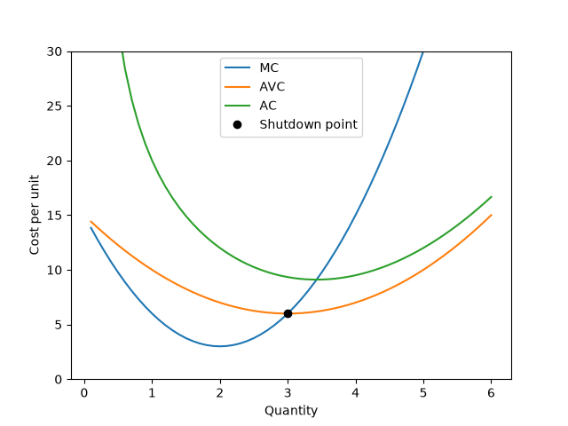

第 4 章: 関数とメソッド¶
4.1 この章の地図¶
この章では、企業の費用と消費者の効用を、関数として書きます。第 1 章から使ってきた関数の仕組みを、ここで整理します。
| 項目 | 内容 |
|---|---|
| 経済学の題材 | 費用曲線（MC・AC・AVC）、効用関数、限界代替率（マインドマップ 5-1, 5-2） |
| 使う Python の機能 | 引数、戻り値、既定値、キーワード引数、組み込み関数、スコープ、メソッド |
| 完成形 | total_cost、marginal_cost、average_cost、average_variable_cost、cobb_douglas_utility、marginal_rate_of_substitution |
| ファイル | 実装: lib/chapter04/cost.py、lib/chapter04/utility.py、lib/chapter04/plot.py（費用曲線の図）／テスト: test/chapter04/test_cost_and_utility.py、test/chapter04/test_plot.py（自分で書くときは、practice/chapter04/ に、同じ名前で作ります） |
経済学の式とコードの対応¶
費用関数は、マインドマップの「逆 S 字の総費用」を、次の 3 次式で表します。
| 経済学 | 式 | コード |
|---|---|---|
| 総費用 C(q) | q³ − 6q² + 15q + 固定費用 | total_cost(quantity, fixed_cost=10) |
| 限界費用 MC(q) | 3q² − 12q + 15（C を q で微分したもの） | marginal_cost(quantity) |
| 平均費用 AC(q) | C(q) ÷ q | average_cost(quantity) |
| 平均可変費用 AVC(q) | q² − 6q + 15（可変費用 ÷ q） | average_variable_cost(quantity) |
| 効用 U(x, y) | x^α · y^(1−α) | cobb_douglas_utility(x, y, alpha=0.5) |
| 限界代替率 MRS | α ÷ (1−α) · y ÷ x | marginal_rate_of_substitution(x, y, alpha=0.5) |
記号について: この章の C は、総費用です。第 9 章と第 13 章の C は、消費を表します。一覧は、記号について を参照してください。
4.2 予想する¶
固定費用が 10 のとき、生産量 q = 2 について、次の値を手計算で求めてください。
- 総費用 C(2)
- 限界費用 MC(2)
- 平均費用 AC(2) と、平均可変費用 AVC(2)
答えは、C(2) = 8 − 24 + 30 + 10 = 24、MC(2) = 12 − 24 + 15 = 3、AC(2) = 24 ÷ 2 = 12、AVC(2) = 4 − 12 + 15 = 7 です。MC が AC より小さいときは AC が下がっている、というマインドマップの関係も、ここで確かめられます。
4.3 関数とメソッド¶
関数の部品¶
次は、部品の説明のために、検証と説明文を省いた形です（完成形は 4.4 節にあります）。
def total_cost(quantity: float, fixed_cost: float = 10) -> float:
return quantity**3 - 6 * quantity**2 + 15 * quantity + fixed_cost
| 部品 | 意味 |
|---|---|
quantity, fixed_cost |
引数。関数に渡す値 |
= 10 |
既定値。渡さなければ 10 になる |
-> float |
戻り値の型 |
return |
関数の結果を返す |
引数の渡し方¶
位置で渡す方法と、名前で渡す方法があります。
total_cost(2) # 24 固定費用は既定値の 10
total_cost(2, fixed_cost=0) # 14 名前を付けて渡す
名前を付けて渡すと、total_cost(2, 0) よりも、0 が何を表すか分かりやすくなります。
組み込み関数¶
Python には、最初から使える関数があります。第 1 章から使ってきた max も、その 1 つです。
max(3, 7) # 7
round(9.333, 2) # 9.33
len([1, 2, 3]) # 3
スコープ¶
関数の中で作った変数は、その関数の中でしか使えません。これを、スコープと呼びます。
def average_cost(quantity: float, fixed_cost: float = 10) -> float:
...
return total_cost(quantity, fixed_cost) / quantity
# average_cost の外から quantity を使うと NameError になる
関数同士は、引数と戻り値だけでやり取りするので、関数の中を書き換えても、外に影響しません。
メソッド¶
値に付属した関数を、メソッドと呼びます。値.メソッド名() の形で呼びます。
prices = [10, 20]
prices.append(30) # リストの末尾に追加する → [10, 20, 30]
"MC は {} です".format(3) # 文字列のメソッド → "MC は 3 です"
関数は len(prices) のように「関数(値)」、メソッドは prices.append(30) のように「値.メソッド()」と書く、という見た目の違いがあります。
4.4 Red → Green → Refactor¶
Red: 総費用のテスト¶
予想した値を、テストにします。
def test_生産量が0でも固定費用がかかる() -> None:
assert total_cost(0) == 10
def test_生産量が2のときの総費用は24() -> None:
# C(q) = q^3 - 6q^2 + 15q + 10 に q = 2 を入れる: 8 - 24 + 30 + 10
assert total_cost(2) == 24
def test_固定費用を変えられる() -> None:
assert total_cost(2, fixed_cost=0) == 14
Green: 費用関数の実装¶
def total_cost(quantity: float, fixed_cost: float = 10) -> float:
"""生産量 q の総費用 C(q) = q^3 - 6q^2 + 15q + 固定費用 を返す。"""
if quantity < 0:
raise ValueError("生産量は 0 以上でなければならない")
return quantity**3 - 6 * quantity**2 + 15 * quantity + fixed_cost
def marginal_cost(quantity: float) -> float:
"""限界費用 MC(q) = 3q^2 - 12q + 15 を返す（総費用を q で微分したもの）。"""
return 3 * quantity**2 - 12 * quantity + 15
def average_cost(quantity: float, fixed_cost: float = 10) -> float:
"""平均費用 AC(q) = C(q) / q を返す。"""
if quantity <= 0:
raise ValueError("平均費用は生産量が 0 より大きいときだけ求められる")
return total_cost(quantity, fixed_cost) / quantity
def average_variable_cost(quantity: float) -> float:
"""平均可変費用 AVC(q) = q^2 - 6q + 15 を返す。"""
return quantity**2 - 6 * quantity + 15
average_cost は、total_cost を呼び出して作っています。関数を組み合わせて、新しい関数を作る例です。
操業停止点をテストで確かめる¶
マインドマップの「操業停止点は MC と AVC の交点」を、テストにします。
def test_生産量が3のとき限界費用は平均可変費用に等しい() -> None:
# 操業停止点: MC と AVC の交点（最低点）
assert marginal_cost(3) == average_variable_cost(3) == 6
実際に、生産量ごとの値を計算すると、次のようになります。
| 生産量 q | MC | AVC | AC |
|---|---|---|---|
| 1 | 6 | 10 | 20.0 |
| 2 | 3 | 7 | 12.0 |
| 3 | 6 | 6 | 9.33 |
| 4 | 15 | 7 | 9.5 |
| 5 | 30 | 10 | 12.0 |
q = 3 で MC と AVC が等しくなり、そこが AVC の最低点（6）です。価格がこの 6 を下回ると、企業は生産しない方が損失が小さくなります。
式や表の数値だけでは、3 本の曲線の関係は見えにくいので、図にします。

図の読み方:
- 青い線（MC）は、最初に下がり、q = 2 で最低（3）になり、そのあと急に上がる
- オレンジの線（AVC）の最低点を、青い線（MC）が下から横切る。その交点（黒い点、q = 3、価格 6）が、操業停止点
- 緑の線（AC）は、AVC より常に上にある。固定費用の分だけ高い。MC は、AC の最低点（q ≈ 3.4）も横切る
- 価格が 6 を下回ると、売るほど損が増えるので、生産しない。価格が 6 以上なら、MC が右上がりの部分（q ≥ 3）が、企業の供給曲線になる
この図は、lib/chapter04/plot.py の plot_cost_curves が、第 4 章の費用関数から描きます（図の生成の方法は、第 7 章にあります）。テストでは、3 本の線の値が費用関数と同じこと、MC と AVC が q = 3 で交わることを確かめています。
効用関数¶
効用関数も、同じ形で書きます。
def test_コブ_ダグラス型の効用は4と9で6() -> None:
assert cobb_douglas_utility(4, 9) == pytest.approx(6)
def test_限界代替率は財yの量を財xの量で割った値に比例する() -> None:
assert marginal_rate_of_substitution(4, 9) == pytest.approx(2.25)
assert marginal_rate_of_substitution(4, 9, alpha=0.75) == pytest.approx(6.75)
def cobb_douglas_utility(x: float, y: float, alpha: float = 0.5) -> float:
"""財 x を x 単位、財 y を y 単位消費したときの効用を返す。"""
if x < 0 or y < 0:
raise ValueError("財の量は 0 以上でなければならない")
return float(x**alpha * y ** (1 - alpha))
def marginal_rate_of_substitution(x: float, y: float, alpha: float = 0.5) -> float:
"""限界代替率 MRS = a / (1 - a) * y / x を返す。"""
if x <= 0:
raise ValueError("限界代替率は財 x の量が 0 より大きいときだけ求められる")
return alpha / (1 - alpha) * y / x
財 y を多く持つほど（y が大きいほど）、財 x を 1 単位得るために手放してよい財 y の量が増えます。一方、財 x が増える（x が大きくなる）と MRS は小さくなり、これがマインドマップの「限界代替率逓減（無差別曲線が原点に凸）」です。
実行結果¶
cd apps/economics-programming/python
uv run pytest test/chapter04
18 passed
4.5 規則で言うと¶
- 経済学の式 1 つを、関数 1 つにする。 総費用・限界費用・平均費用のように、関連する式は別々の関数にして、必要なときに組み合わせる
- 経済学で変えて試したい値は、既定値のある引数にする。
fixed_cost=10のように、基本の値を既定値にして、変えたいときだけ名前を付けて渡す - 関数は、引数と戻り値だけで外とやり取りする。 関数の中で作った変数は、外から見えない
混同しやすい点を、表にまとめます。
| 混同しやすい点 | 違い |
|---|---|
| 限界費用と平均費用 | 限界費用は「あと 1 単位作るときの費用」、平均費用は「1 単位あたりの費用」。MC が AC より小さいと AC は下がり、大きいと上がる |
| 操業停止点と損益分岐点 | 操業停止点は MC と AVC の交点（q = 3、価格 6）。損益分岐点は MC と AC の交点で、より高い価格になる |
| 関数とメソッド | len(x) は関数、x.append(1) はメソッド。メソッドは値に付属している |
このモデルが成り立たない場面¶
この費用関数は、生産量が連続的に変えられる前提です。実際には、機械の台数や人数のように、不連続に増える費用があります。また、限界費用の式は、総費用の式を微分して手で導いたものです。総費用の式を変えたら、限界費用の式も変えないと、2 つが食い違います。第 10 章（SciPy による最適化）で、式を微分せずに、費用や利潤の最小値・最大値を数値で探す方法を学びます。
4.6 練習問題¶
| 種類 | 問題 |
|---|---|
| 想起 | 本文を閉じて、total_cost と marginal_cost を自分で書いてください |
| 生成 | 解説を見る前に、利潤 = 価格 × 生産量 − 総費用 を返す profit(price, quantity) を、テストから書いてください。価格 15、生産量 4 のときの利潤を、手計算で求めて、テストにします（総費用は、第 4 章の total_cost で求められます） |
| 多様 | 固定費用を 0 と 20 に変えて、q = 2 のときの average_cost を手計算し、テストで確かめてください |
| 交互 | 第 2 章の income_elasticity と、この章の marginal_cost を組み合わせて、生産量が 2 から 3 に増えたときの、限界費用の生産量に対する弾力性を求めてください。引数の名前は「所得」ですが、式は「ある量の変化率 ÷ 別の量の変化率」なので、生産量（2 → 3）を所得の位置に、限界費用（3 → 6）を需要量の位置に渡せます |
解答（先に自分で取り組んでから、開いてください）
想起: 本文と見比べて、total_cost が負の生産量で ValueError を出しているか、marginal_cost が 3q² − 12q + 15 になっているかを確かめます。
生成:
def profit(price: float, quantity: float) -> float:
return price * quantity - total_cost(quantity)
def test_価格15で生産量4のときの利潤は22() -> None:
# 収入 15 × 4 = 60、総費用 38
assert profit(price=15, quantity=4) == 22
def test_生産しなくても固定費用は払うので利潤はマイナス() -> None:
assert profit(price=15, quantity=0) == -10
多様: 固定費用 0 のとき、C(2) = 8 − 24 + 30 + 0 = 14 なので、AC = 14 ÷ 2 = 7 です。固定費用 20 のとき、C(2) = 34 なので、AC = 34 ÷ 2 = 17 です。
def test_固定費用を変えたときの平均費用() -> None:
assert average_cost(2, fixed_cost=0) == 7
assert average_cost(2, fixed_cost=20) == 17
交互:
income_elasticity(
income_before=2,
income_after=3,
quantity_before=marginal_cost(2), # 3
quantity_after=marginal_cost(3), # 6
) # 2.0
生産量は 2 → 3 で +50%、限界費用は 3 → 6 で +100% なので、弾力性は 2.0 です。生産量が 1% 増えると、限界費用は 2% 増えます。
4.7 振り返り¶
- 予想した C(2)・MC(2)・AC(2)・AVC(2) は、テストの結果と一致しましたか
- 関数に分けたとき、迷った所はどこでしたか（どこまでを 1 つの関数にするか）
- 次の章までに試してみたいことは何ですか
4.8 まとめ¶
- 引数、戻り値、既定値、キーワード引数、組み込み関数、スコープ、メソッドを学んだ
- 費用関数（C・MC・AC・AVC）と効用関数・限界代替率を関数にした
- MC と AVC の交点（操業停止点）を、テストで確かめた
次の章では、条件分岐と繰り返しを学び、価格が均衡に向かう調整過程を、コードで動かします。